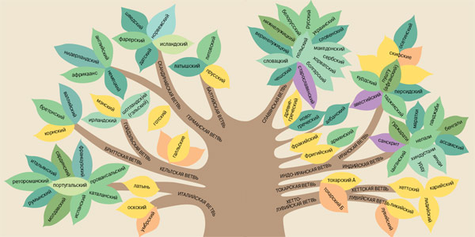

академик Андрей Анатольевич Зализняк
«Наука и жизнь» №1 и №2, 2009
Откуда произошло, как появилось то или иное слово? Эти вопросы вызывают живой интерес у многих. В поисках ответа человек, далекий от лингвистики, нередко начинает строить догадки, основанные на случайном сходстве слов. Любительская лингвистика — не такое уж безобидное увлечение, как может показаться на первый взгляд. О типичных ошибках лингвистов-любителей и опасности дилетантского подхода к изучению языка рассказывает известный лингвист Андрей Анатольевич Зализняк. С его любезного разрешения редакция публикует расширенный вариант текста лекции, прочитанной в МГУ на Третьем фестивале науки.
Свобода печати и появление интернета — великие достижения нашей эпохи. Но у любых шагов прогресса есть также и свои теневые стороны. Ныне такой теневой стороной оказалось бурное развитие дилетантизма и падение престижа профессионализма.
Об этом говорят представители самых разных наук и искусств. Например, Александр Ширвиндт с горечью пишет в своих воспоминаниях о Зиновии Гердте: «В эпоху повсеместной победы дилетантизма всякое проявление высокого профессионализма выглядит архаичным и неправдоподобным».
Любительство в области рассуждений о языке распространено шире, чем в других сферах, — из-за иллюзии, что здесь никаких специальных знаний не требуется. Все знают, что есть такие науки, как физика и химия; а о том, что есть и наука о языке — лингвистика, — слишком многие и не подозревают.
Попробуйте вообразить любительскую книгу о небесных светилах, где обсуждался бы вопрос, какого размера Луна — с тарелку или с монету. Между тем любительские сочинения о языке совершенно такого же уровня циркулируют в немалом количестве и охотно читаются и принимаются всерьез довольно широкой аудиторией.
Особенно печальным показателем состояния нашего образования является то, что и в числе авторов любительских сочинений о языке, и в числе их читателей и поклонников мы встречаем вполне образованных людей и даже носителей высоких ученых степеней (разумеется, других наук).
Должен предупредить, что мне придется сегодня излагать многое такое, что для лингвистов давно стало прописной истиной, азами профессии. Если бы в подобной лекции кто-то вздумал излагать азы математики, или физики, или химии, это было бы нелепо, поскольку каждый знакомился с ними уже в школе. Но, к несчастью, в школе не проходят никаких азов исторической лингвистики, и о них почти ничего не известно людям других профессий.
Я предпочитаю не называть конкретные имена лингвистов-любителей — тем более, что многие из них только того и хотят, чтобы их упоминали, хотя бы и в осуждение, чтобы выглядеть серьезными оппонентами, с которыми спорят. Я пытаюсь противостоять не конкретным авторам, а целому любительскому направлению, в сущности, довольно однообразному в своих декларациях и в своем способе действия.
Сделаю исключение лишь для самого известного из таких авторов — академика-математика Анатолия Тимофеевича Фоменко, выступления которого в роли лингвиста-любителя мне уже доводилось печатно критиковать. Безусловному большинству тех, кто знаком с его так называемой новой хронологией, известны отнюдь не его математические работы, а книги по истории самых разных стран (России, Англии, Рима, Греции, Египта и т. д.), которая в изображении Фоменко не имеет ничего общего с привычными представлениями. Многие относятся к этим книгам всерьез, поскольку наивно полагают, что излагаемая в них история выявлена с помощью математики. Но в действительности какое бы то ни было отношение к математике могло бы иметь в лучшем случае только утверждение Фоменко, что традиционная хронология неверна. Фоменко не доказал даже и этого своего утверждения. Но в данном случае для нас еще существеннее другое, а именно: основное содержание книг Фоменко — подробные рассказы о том, какой же якобы была история всех стран, отличная от традиционных представлений: какие завоевания совершал тот или иной народ, кем были правители империй, какие приказы они рассылали и т. п. И эти рассказы не имеют никакого отношения к математике, а почти целиком основаны на рассуждениях о словах — географических названиях и именах людей. И увы, эти рассуждения содержат точно те же грубейшие и наивнейшие ошибки, что у любителей без степеней и званий, то есть целиком и полностью относятся к сфере любительской лингвистики.
Правда, сейчас фантазии Фоменко на тему истории уже тонут в потоке других печатных и телевизионных выступлений такого же рода, безудержно перекраивающих — каждый раз по-своему — историю России и всего мира. Но всё же прискорбно, особенно для научной и университетской среды, что в ряду безответственных дилетантов-фантазеров оказался человек высокого научного и университетского статуса.
Для большинства людей язык, на котором они говорят, представляет собой не только необходимый для практической жизни инструмент, но, по крайней мере в какие-то моменты, также и объект живого бескорыстного интереса.
Люди самых разных жизненных занятий и уровней образования время от времени задаются вопросами, связанными с языком. Чаще всего это вопросы о том, чтo правильнее из тех или иных встречающихся в речи вариантов, например: прoдал или продал? эксперт или эксперт? везде, где бы он ни был или везде, где бы он не был? В этих случаях ответы могут иметь и некоторую значимость для практической жизни.
Но часто возникают и вопросы, так сказать, бескорыстные, порожденные чистой любознательностью. Например: что в точности значит слово аляповатый? Откуда оно произошло? Когда оно появилось? Или: есть ли какая-то связь между словами мятый и мята? или суд и судно? или калий и кальций? или укусить и покуситься? И т. п.
Школьная традиция, к сожалению, такова, что все такие вопросы остаются за рамками обучения. В школе обучают грамматике и орфографии родного языка и элементам иностранного, но не дают даже самых первоначальных представлений о том, как языки изменяются во времени.
В результате для удовлетворения живого интереса к вопросам, связанным с языком, большинству людей приходится довольствоваться случайными сведениями, которые они прочли или услышали по радио или телевидению.
Многие же пытаются получить ответы на эти вопросы путем собственного размышления и догадок. Свободное владение родным языком порождает у них ощущение, что всё необходимое знание о предмете им тем самым уже дано и остается только немного подумать, чтобы получить правильный ответ.
Так рождается то, что можно назвать любительской лингвистикой.
Нельзя не признать, что часть вины за такое положение вещей лежит на самих лингвистах, которые мало заботятся о популяризации своей науки. В частности, этимологические словари, которые призваны служить основным собранием сведений о происхождении слов, существуют только в научном варианте, где терминология и аппарат часто оказываются труднодоступными для непрофессионального читателя. А русские толковые словари, знакомые широким кругам гораздо лучше, чем этимологические, к сожалению, в отличие от популярных толковых словарей западноевропейских языков, сведений о происхождении слов (кроме некоторых заимствованных) не дают.
Напротив, лингвисты-любители подкупают читателей внешней простотой рассуждений — читателю импонирует то, что, судя по простодушному характеру этих рассуждений, никакой особой хитрости в таком занятии нет и он может и сам успешно в нём участвовать.
Основное содержание любительской лингвистики — рассуждения о происхождении слов.
Тут следует заметить, что часто люди просто играют со словами, например, обыгрывают в шутках внешнее сходство двух слов. В этих играх они, не претендуя ни на какие филологические открытия, хотят только, чтобы получилось забавно и остроумно.
Всем известны, например, такие игры со словами, как ребусы и шарады. Еще одна подобная игра, популярная, в частности, у филологов, носит название «Почему не говорят». В этой игре, как и в шарадах, слово разбивается на части, равные каким-то словам, а затем эти слова заменяются на близкие по смыслу. Вот прелестный пример: почему не говорят «красна чья рожа»? Ответ: потому что говорят ал-кого-лик.
Лингвист охотно позабавится игрой ал-кого-лик, а вот любитель легко может поверить, что он открыл таким образом происхождение слова алкоголик. А заглядывать в этимологический словарь (из которого легко узнать, что слово алкоголь пришло из арабского) любитель не сочтет нужным — он больше верит своей интуиции. И вот мы уже слышим от него, например, что первый слог слова разум или конец слова хандра — это имя египетского бога Ра и т. п.
Пока человек осознаёт и признаёт, что он просто играет со словами или получает чисто эстетическое удовольствие от их созвучия, это не любительская лингвистика, это одна из нормальных функций языка. Любительская лингвистика начинается там, где автор заявляет, что он разгадал истинное происхождение слова.
Типовое действие любителя состоит в том, чтобы, заметив некоторое сходство слов А и В, заявить: «Слово А произошло из слова В». При этом любителю неважно, принадлежат ли слова А и В одному и тому же языку или разным, являются ли эти языки родственными или неродственными, расположены рядом или в разных концах земного шара.
Скажем, заметив, что английское слово poop ‘корма’ сходно с русским словом пуп, любитель задумывается: в чём тут дело? Наверно, английское слово произошло из русского, решает он; что же касается разницы значений, то любителя эта сторона дела, как мы еще увидим ниже, обычно мало затрудняет.
Между словами, сходными внешне, может не быть никакой связи.
Любитель не осознаёт того, что случаи близкого сходства (или даже совпадения) внешних оболочек каких-то слов из разных языков не составляют ничего исключительного, особенно если слова короткие. Напротив, с точки зрения теории вероятностей было бы крайне удивительно, если бы их не существовало. Ведь число фонем* в любом языке сравнительно невелико — несколько десятков.
Полистайте, например, английский словарь, и вы найдете десятки слов, сходных по звучанию с какими-то из русских слов, например: crest, beach, boy, bread, plot, net, rye и т. п.
В тонкости фонетики иностранного языка любитель не вникает, он берет иноязычное слово просто в русской транскрипции. Это значит, что для него всё разнообразие звучаний иностранных слов сводится к разным комбинациям из 33 русских букв.
Рассмотрим, например, русские буквенные цепочки, имеющие структуру «согласная + а, о, у, е или и (то есть одна из основных гласных) + согласная». Разных буквенных цепочек такой структуры может быть 21 × 5 × 21 = 2205. Как показывает подсчет, около четверти этих цепочек в русском языке служат внешним выражением какой-нибудь словоформы**, например кит, рук, дал, вот (а в случаях омонимии — даже нескольких словоформ, как, скажем, рой — существительное и глагол).
Возьмем какой-нибудь иностранный язык, где много слов имеет структуру «согласная + гласная + согласная» (большинство языков именно таково). В русской транскрипции эти слова будут иметь вид описанной выше цепочки. Но в условиях, когда четверть таких цепочек уже «занята» русскими словоформами, практически невероятно, чтобы не произошло никаких совпадений записанных таким образом иностранных слов с русскими словоформами.
Пусть имеется какая-нибудь пара языков, например, такие два родственных языка, как английский и русский. Созвучие английского и русского слов может иметь два принципиально различных источника:
1) наличие исторической связи между двумя словами;
2) случайность.
У исторической связи есть два варианта:
a) историческое родство, то есть происхождение из одного и того же слова того языка, который был общим предком взятых языков (для английского и русского таким предком является праиндоевропейский язык);
б) отношение заимствования (то есть в данном случае тот факт, что либо русское слово есть результат заимствования именно этого английского слова, либо наоборот).
Например, в паре «англ. three — русск. три» имеет место отношение родства (1а);
в парах «англ. dog — русск. дог» и «англ. tsar — русск. царь» — отношение заимствования (1б), а именно в первом случае русское слово заимствовано из английского, во втором — наоборот;
в паре «англ. poop — русск. пуп» — случайное совпадение (2).
Понятно, что, чем ближе родство двух языков, тем чаще будут встречаться пары исторически родственных слов. Например, сходные слова русского и украинского языков в подавляющем большинстве случаев принадлежат именно к этой категории. Напротив, при относительно дальнем родстве (как, например, между английским и русским) доля таких пар невелика. В случае неродственных языков их нет вообще.
Для нашего разбора существенно то, что практически всегда имеются пары со случайным сходством — как в родственных, так и в неродственных языках.

Конечно, внешние совпадения чаще всего отмечаются в тех случаях, когда сравниваемые отрезки короткие. Но могут совпадать и более длинные единицы. Например, не имеют никакой исторической связи с созвучными русскими словоформами:
итальянские stradali ‘дорожные’, costi ‘цены’, cervi (се = че) ‘олени’, certi ‘некоторые’, gusto ‘вкус’, piano ‘тихо’, porca ‘свинья’, lasca ‘плотва’, perina ‘маленькая груша’, palata ‘полная лопата (чего-либо)’, stirái ‘я выгладил’, conciái (ciái = чай) ‘я выдубил’;
французские cabane ‘хижина’, morose ‘угрюмый’, corolle ‘венчик’;
испанское primer-o ‘первый’;
новогреческое skotiná ‘потемки, мрак’;
шведское skotska ‘шотландка’;
арабские nawāl ‘дар, даяние’, zawāl ‘закат, гибель’, nahhāl ‘пчеловод’;
хинди nagar ‘город’;
персидское baran ‘дождь’;
турецкие kulak «ухо», durak «остановка» (между прочим, последнее слово привлекло внимание Иосифа Бродского, который обыграл его в своем эссе о Стамбуле).
Приведенные примеры демонстрируют возможность совпадения целых слов (точнее, целых словоформ). Но представляют интерес также и те случаи, когда созвучны не целые словоформы, а только их корни. Корни же, в отличие от слов, не бывают особенно длинными. В любых языках корень обычно состоит из трех-пяти фонем. Как более короткие, так и более длинные корни малочисленны. Число корней может быть в разных языках различным, но чаще всего это величина порядка двух-трех тысяч.
В этой ситуации даже в рамках одного и того же языка практически всегда бывают случаи внешнего совпадения. Например, в русских словах пол ‘настил’, пол-овина, пол-ый, про-пол-ка представлено четыре разных (то есть различающихся по значению) корня, хотя и совпадающих внешне.
А при сравнении разных языков случайные созвучия корней — это уже массовое явление, особенно если корень состоит из широко распространенных в языках мира фонем. Возьмем, например, корень русских слов мен-а, мен-ять, то есть мен-, и посмотрим, нет ли в других языках созвучных корней, то есть таких, которые в русской транскрипции выглядели бы как мен- или мэн-. Оказывается, таких корней не просто много, а трудно найти язык, где такого корня не было бы!
Вот некоторые примеры (приводим из каждого языка лишь по одному такому корню, хотя часто их бывает несколько): англ. man ‘человек’, men ‘люди’, фр. il mène ‘он ведет’, нем. Mähn-e ‘грива’, итал. men-o ‘меньше’, швед. men-a ‘думать, полагать’, литовск. mėn-uo ‘месяц’, древнегреч. mén-ō ‘остаюсь’, санскритск. men-ā ‘самка’, перс. män ‘я’, араб. män ‘кто’, тур. men ‘запрет’, фин. men-nä ‘идти’, венг. mén ‘жеребец’, суахили men-a ‘презирай’ и т. д. И при этом, по данным лингвистики, никакая пара из этих корней не имеет между собой исторической связи.
Случайное совпадение внешних оболочек двух слов может соединиться со случайным совпадением их значений. В самом деле, случайных созвучий в языках так много, что по элементарным законам теории вероятностей в какой-то их доле непременно окажутся близкими также и значения созвучных слов. Таких примеров немного, но всё же они существуют.
Вот некоторые примеры сходства как формы, так и значения, за которым, однако, не стоит ни отношения родства, ни отношения заимствования, то есть ничего, кроме чистой случайности.
Итальянское stran-o ‘странный’ и русское стран-ный одинаковы по значению и имеют одинаковый корень (но итальянское слово произошло из латинского extraneus ‘внешний, посторонний, иностранный’, от extra ‘вне’, а в русском тот же корень, что в страна, сторона).
Персидское bäd ‘плохой’ как по звучанию, так и по значению практически совпадает с английским bad ‘плохой’, но родства между ними нет.
Таджикское назорат ‘надзор’ очень похоже на русское надзор (но в действительности оно заимствовано из арабского).
Чешское vudle ‘воля’ очень похоже на новогреческое ůle ‘воля’; но родства между ними нет.
Древнеяпонское womina ‘женщина’ очень похоже на английское woman ‘женщина’ (пример С. А. Старостина).
Приведeнные примеры достаточно ясно показывают, что, вопреки неистребимой вере лингвистов-любителей, внешнее сходство двух слов (или двух корней) само по себе еще не является свидетельством какой бы то ни было исторической связи между ними.
Ответить на вопрос о том, есть ли такая связь или нет, можно только с помощью профессионального лингвистического анализа, который требует учета гораздо большего количества данных, чем просто внешний вид двух сравниваемых слов, а именно требует обширных сведений из истории обоих рассматриваемых языков.
Практический вывод: нельзя принимать всерьез никакое сочинение, в котором какие бы то ни было утверждения основаны только на том, что два слова созвучны, без более глубокого анализа источника этого созвучия.
За время существования исторической лингвистики в этой науке сделано два главных открытия — открытие самого факта, что языки со временем изменяются, и открытие основного принципа их изменения.
Первое люди в какой-то мере осознали давно (замечая, в частности, различия между диалектами или близкородственными языками на фоне их общего сходства). Ныне мы знаем, что в ходе истории любого языка происходят постепенные изменения на всех его уровнях — в фонетике, грамматике, значениях слов. Конкретный характер этих изменений в разных языках и в разные эпохи различен, различна также скорость этих изменений. Но неизменным не остается ни один живой язык. Неизменны только мертвые языки.
Внешний облик слова в ходе истории языка может меняться чрезвычайно сильно — вплоть до полной неузнаваемости. Вот для наглядности некоторые примеры:
латинское calidum ‘горячий’ превратилось во французском языке в chaud [šo];
древнеанглийское hlāfweard (буквально: ‘хлебохранитель’) превратилось в современном английском в lord ‘лорд’;
древнеиндийское bhavati ‘он есть’ превратилось в хинди в hai;
древнеперсидское ariyānām ‘арийцев’ (подразумевается: земля, страна) (родительный падеж множественного числа от ariya «ариец») превратилось в современном персидском в iran ‘Иран’.
Как можно видеть, древняя и новая формы одного и того же слова иногда могут даже не иметь ни единого общего звука.
Для языков с многовековой письменной традицией, например русского, английского, французского, греческого, персидского, в изменяемости языка можно непосредственно убедиться, читая тексты прошедших веков. Чем больше временная дистанция, тем труднее современному человеку, если он не имеет специальной лингвистической подготовки, понять сочинения своих предков. Углубляясь во всё более древние времена, он дойдет и до таких текстов, в которых ему не понятно почти ничего. Например, для современного англичанина (не лингвиста) древнеанглийский текст Х века — это уже просто иностранный язык. Еще разительнее отличается современный французский язык от латыни, из которой он развился за полтора тысячелетия.
Основной принцип изменений в языке был открыт лишь в XIX веке, и это самое великое достижение исторической лингвистики. Его значение для этой науки не меньшее, чем, скажем, значение открытия закона всемирного тяготения для физики.
Принцип состоит в том, что внешняя форма слов языка меняется не индивидуальным образом для каждого слова, а в силу процессов — так называемых фонетических изменений (иначе — фонетических переходов), охватывающих в данном языке в данную эпоху ВСЕ без исключения слова, где имеется определенная фонема (или сочетание фонем).
Это основополагающий принцип исторической лингвистики.
Даже самая диковинная трансформация облика слова в ходе истории — результат не случайной индивидуальной замены звуков, а последовательно реализованных во всей лексике языка фонетических изменений, происходивших в данном языке в определенный период в прошлом.
Например, эволюция, превратившая латинское cálidus во французское chaud [šo], — это следующая цепочка сменяющих друг друга во времени форм данного слова (привожу их в фонетической транскрипции):
[kálidum] → [káldum] → [kald] → [čald] → [čaud] → [šaud] → [šod] → [šo].
Самое важное здесь то, что каждый из шагов такой эволюции — это фонетическое изменение, совершившееся не в одном лишь данном слове, а во всех словах данного языка, где подвергавшийся изменению звук находился в такой же позиции. (Что значит «такая же позиция», в каждом случае определяется вполне строго, но здесь нет необходимости приводить технические детали.)
Например, [kálidum] превратилось в [káldum] в силу того, что в данном языке всякое безударное i в положении между двумя одиночными согласными в определенный исторический момент выпадало. Далее, [káldum] превратилось в [kald] в силу того, что в некоторый более поздний момент всякое конечное -um отпадало, и т. д.
При всей удивительности превращения сálidum в [šo], в силу принципа всеобщности фонетических изменений любое латинское слово, частично сходное c сálidum, должно дать во французском языке слово, частично сходное с [šo]. И действительно, например, латинское sólidum ‘плотный, крепкий’ (так же как название золотой монеты) дало французское слово sou [su] (название монеты). Различие между [šo] и [su] опосредствованно отражает исходное различие между са- и so-.
Откуда лингвисты получают сведения о прежних состояниях языка? Подробно останавливаться на этом я не могу, но самое главное укажу.
Прямой источник (возможный для языков, имеющих письменную традицию) — письменные памятники того же языка, дошедшие от прежних веков. Правда, извлечение сведений о языке из этих памятников представляет собой более сложную операцию, чем кажется на первый взгляд, но лингвисты приобрели в этом деле уже богатый опыт.
Другой путь, логически более сложный, но ныне уже обладающий детально разработанной строгой методикой, — так называемый сравнительно-исторический анализ, то есть сравнение данного языка с родственными языками с целью восстановления того общего состояния, из которого развились все эти языки. Он пригоден также и для бесписьменных языков.
Вот упрощенный пример — сравнение слова «сон» в разных славянских языках: русское сон, польское sen, сербское сан, словенское sən, болгарское сън (в последних двух случаях выступают специфические для этих языков гласные ə и ъ, отсутствующие в других языках). Если такой пример не единичен, а точно такое же звуковое соотношение между пятью языками повторяется в серии других слов, то сравнительное языкознание делает вывод, что:
Наконец, еще один способ проникновения вглубь истории языка — внутренняя реконструкция (то есть такая, которая не использует внешнего сравнения). Этот метод применим даже и в тех случаях, когда нет родственных языков.
Снова упрощенный пример — беглое и небеглое о в русском языке: боб — боба, но лоб — лба; исток — истока, но листок — листка. Почему одно и то же о при добавлении к слову окончания -а в одних случаях остается, а в других выпадает?
Единственное решение, удовлетворяющее принципу всеобщности фонетических изменений, состоит здесь в том, что прежде в этих парах слов были разные фонемы — о1 и о2 (чем именно они фонетически различались, мы не знаем, но нам существен здесь прежде всего сам факт их нетождественности). В дальнейшем в силу своей нетождественности они вели себя по-разному; в частности, при добавлении к слову окончания -а одно из них выпадало, а другое нет. А в позиции без такого добавления они совпали в современном едином о. Данное решение есть пример внутренней реконструкции.
Таковы основные инструменты исторической лингвистики.
Как итог двух веков интенсивного применения этих инструментов исследования для наиболее изученных языков известна вся их фонетическая история на протяжении большего или меньшего числа веков. Она выглядит как мощная цепь фонетических изменений — своя для каждого языка, — расположенных в порядке так называемой относительной хронологии, то есть с точным указанием того, какое изменение произошло раньше и какое позже. Сравните выше пример с французским [šo].
В результате задачи типа «Во что превратилось латинское слово А в современном французском языке?» и типа «Как выглядело латинское слово, из которого произошло французское слово В?» решаются в современной исторической лингвистике с той же точностью, что, например, уравнения в алгебре.
И то же верно для любых других хорошо изученных языков, например для современного русского в его соотношении с древнерусским.
Поскольку в каждом языке цепь фонетических изменений своя, между родственными языками наблюдаются закономерные фонетические соответствия.
Например, в итальянском языке латинское с перед а сохранилось (а не перешло в [š], как во французском). Поэтому ныне в кругу слов, латинские предки которых содержали са, наблюдается регулярное соответствие «фр. ch [š] — ит. с [k]», например: фр. chаud ‘горячий’ — ит. caldo; фр. cher ‘дорогой’ — ит. сaro; фр. chant ‘пение’ — ит. сanto; фр. blanche ‘белая’ — ит. bianca; и т. д.
Другой пример: в русском языке праиндоевропейское начальное p сохранилось, а в английском в некоторый момент его предыстории перешло в f. Поэтому в родственных словах этих двух языков имеет место соответствие «русск. начальное п — англ. f», например: пять — five, плыву — flow, полный — full, пясть — fist, пена — foam, паром — ferry (это иллюстрации только для начальной согласной, остальные части этих слов требуют более сложных объяснений).
По этим причинам родственные слова разных языков почти всегда внешне чем-то различаются, а не совпадают полностью. Внешние различия могут при этом оказаться даже очень глубокими. Например, русскому слову волк идеально строго соответствует таджикское гург ‘волк’.
Вот еще некоторые примеры слов, совершенно точно соответствующих друг другу в фонетическом отношении (то есть восходящих к одному и тому же слову праязыка), однако совсем не сходных внешне:
русское два — армянское erku ‘два’;
русское три — таджикское се ‘три’;
греческое déka ‘десять’ — английское ten ‘десять’;
французское que [kə] ‘что’ — немецкое was ‘что’;
русское зуб — немецкое Kamm ‘гребень’ (то есть зубчатый предмет);
латинское ovis ‘овца’ — английское ewe [ju:] ‘овца’.
Лишь небольшими деталями морфологического оформления различались в праиндоевропейском языке предки русского слова живот (старое значение — ‘жизнь’) и французского vie [vi] ‘жизнь’ или предки английского I come ‘я прихожу’ и французского je viens ‘я прихожу’.
А как раз полное внешнее совпадение двух слов по тем же причинам может стать прямым свидетельством их неродственности. Так, русск. пуп и англ. poop неродственны уже по одной той причине, что английское слово имеет такое же начальное р, как русское (а не f, как было бы при родстве), — даже если отвлечься от всех остальных фактов, свидетельствующих о том же.
Отсюда ясно, сколь мало шансов имеет любитель, ничего не знающий о всех цепях фонетических изменений и видящий только нынешние облики слов, раскрыть истинное происхождение слова.
Но действительно ли принцип всеобщности фонетического изменения действует столь жестко и не знает никаких исключений?
Следует признать, что на уровне первичного наблюдения отклонения от этого принципа встречаются. Однако опыт исторической лингвистики показал, что такие отклонения не случайны и не хаотичны. При более глубоком исследовании они практически всегда оказываются результатом действия ранее неизвестных более частных правил (тоже вполне строгих), уточняющих условия действия основного фонетического изменения.
Классический пример — знаменитая статья Карла Вернера (1877 года) под чрезвычайно показательным названием «Одно исключение из первого передвижения согласных». Первым передвижением согласных (или иначе: законом Гримма — по имени первооткрывателя, точнее, одного из двух первооткрывателей — другим был Расмус Раск) называют правило фонетического изменения праиндоевропейских согласных в прагерманском языке.
Из правила первого передвижения согласных было известно некоторое число исключений. Вернер открыл, что эти исключения подчиняются более частному правилу, состоящему в том, что при определенном положении ударения возникал иной фонетический результат, чем по закону Гримма (но тоже строго определенный). И вот ныне это правило, получившее уже имя закона Вернера, стало одним из фундаментальных положений исторической фонетики индоевропейских языков.
Другой источник кажущихся нарушений принципа всеобщности фонетического изменения — случаи заимствования некоторого слова из родственного языка или диалекта. Например, современное русское слово благо внешне нарушает определенное правило из истории русского языка, по которому должно было получиться не благо, а болого. Но дело здесь в том, что слово благо пришло в современный язык не из живого древнерусского языка (где действительно имелось слово болого — откуда, например, название города Бологое), а из церковнославянского (для которого фонетически закономерным было именно благо).
За рамками этих двух типовых ситуаций остается лишь совершенно незначительное число случаев видимого нарушения указанного принципа. Следует предполагать, что для них просто пока еще не выявлено то частное правило, в силу которого они возникли.
В итоге для чисто случайных замен одного звука на другой, не являющихся частью никаких более общих процессов (то есть именно таких замен, которые на каждом шагу свободно допускает любитель), в исторической лингвистике вообще не остается места.
Более того, они не хотят его знать, даже если им его формулируют и разъясняют, — потому что он немедленно становится непреодолимым препятствием на пути их фантазерства.
Они любят подавать свои фантазии как что-то новое в изучении языка. В действительности же нынешние любители в точности продолжают наивные занятия своих предшественников XVIII века. Их просто никак не коснулись великие открытия XIX века в области исторической лингвистики.
Представим себе человека, рассуждающего о веществах, которые он встречает в окружающем мире, не подозревая, что у этих веществ есть химический состав — нечто недоступное глазу, осязанию и обонянию, открывающееся только с помощью выработанных целыми поколениями исследователей профессиональных приемов анализа.
Понятно, что именно в таком положении находились любознательные люди в древности. Но теперь такой наивный естествоиспытатель уже не вызовет ничего, кроме насмешки.
Увы, не так с языком — здесь рассуждения в области языка точно такой же степени наивности многими принимаются с доверием, хотя ситуация в действительности вполне аналогична: языкознание трудами поколений исследователей выработало профессиональные приемы изучения, в частности, истории слов — истории, в большинстве случаев совершенно скрытой от того, кто знает только современный вид слова.
Любитель из всей этой проблематики усвоил только то, что фонетический состав слова может со временем сильно изменяться. И это вдохновляет его на то, чтобы для любого слова предположить нужную для его идеи замену одного звука на другой. Скажем, предположить, что слово флот — это просто плот с переходом п в ф.
В самом деле, у всякого любителя мы непременно встретим заявления типа того, что т может (вообще!) превращаться в д или что б может превращаться в в и т. п. Эти заявления — совершенно такого же свойства, как у любителя природы, который сообщил бы нам, что вода иногда может принимать форму пара, а иногда форму льда, — без всякой мысли о том, что эти события происходят лишь при совершенно определенных условиях, и без всяких попыток эти условия выяснить.
И если современная историческая лингвистика похожа на алгебру с ее строгими методами решения уравнений, то лингвиста-любителя можно сравнить с человеком, который смотрит на уравнение — не зная ни методов решения уравнения, ни способов проверки — и говорит: я думаю, что х = 10: я встречал некоторые уравнения, и там был ответ «х = 10».
Характернейшим свойством любителя является принципиальная нестрогость всего, что он делает.
В отличие от профессионала, который считает себя обязанным при анализе происхождения некоторого слова дать точное объяснение каждой фонеме в его составе, лингвист-любитель никогда не проявляет подобной требовательности к себе.
Например, он считает вполне допустимым, чтобы вместо ожидаемого б в разбираемом им слове выступало в, или п, или ф; вместо т — д, или ц, или с, или з, или ж, или ш. При сравнении слов какие-то буквы он считает возможным отбрасывать, то есть не принимать во внимание, какие-то другие, напротив, домысливать; он легко допускает перестановку букв и т. п.
Ясно, что при таких безбрежных степенях свободы у любителя нет никаких препятствий к тому, чтобы сравнивать (и отождествлять) практически что угодно с чем угодно — скажем, пилот и полёт, саван и зипун, сатир и задира и так далее до бесконечности.
Лингвист-любитель катастрофически не замечает того, что его способы действия позволяют дать не только то решение, которое он предлагает, но и множество других, его совершенно не устраивающих, но столь же допустимых с точки зрения его методики. Никакого ответа на вопрос, почему он выбрал именно это решение среди десятков возможных, кроме «я так вижу» или «это я угадал», он дать не может.
Вообще, лингвистам-любителям чужд главный принцип науки как таковой — требование доказать выдвигаемое утверждение или по крайней мере предъявить веские аргументы в его пользу, которые показали бы его предпочтительность перед конкурирующими версиями. Любителю совершенно достаточно того, что, по его мнению, «так могло быть».
В среде лингвистов-любителей широко распространен целый ряд совершенно фантастических, не опирающихся ни на какие реальные факты идей относительно свойств языка, которые можно назвать мифами любительской лингвистики.
Первый из таких мифов — это то, что гласные можно вообще не принимать во внимание, достаточно взять так называемый костяк согласных. Над этим принципом любителей ХVIII века издевался уже Вольтер, говоря, что их наука состоит в том, что гласные не значат ничего, а согласные очень мало.
Замечу, что при этом мало кто из любителей удерживается от ссылки — не имеющей решительно никакого отношения к делу и к тому же еще и неверной — на то, что в древних письменностях гласные якобы никогда не писались.
Понятно, что этот миф на порядок расширяет возможности для полета фантазии. Например, ничто не мешает любителю объявить первоначально тождественными слова мир, мэр, мор, мера, море, умора, амур, эмир и т. д.
В действительности изменения гласных подчинены столь же строгим закономерностям, как и у согласных, только более сложным. Эта сложность определяется тем, что в сфере гласных фонетические переходы обычно более многочисленны и более дробно дифференцированы по позициям, а также тем, что во многих языках существует система чередований гласных.
Следующий миф любительской лингвистики — это приоритет письма перед звучащей речью. Для любителя написание первично, а звучание вторично: «это то, как прочли слово». Многие слова, по мнению любителей, возникли из того, что кто-то неправильно прочел некоторое другое слово.
Любитель настолько привык к своему умению читать и к своей жизни среди письменных текстов, что он уже не в состоянии осознать, что в истории человечества письменность была уделом совершенно ничтожной части умеющих говорить.
Любой живой язык — это средство устного общения, тогда как письменная форма на протяжении последних, скажем, четырех тысяч лет (за вычетом последних двух веков) существовала никак не более чем для одной сотой части языков, а доля грамотных людей в составе человечества была, вероятно, еще в тысячу раз меньше.
Представление о приоритете письменного языка над устным — яркий пример того, насколько независим лингвист-любитель от фактов.
На представлении о приоритете написания основан один из самых невежественных, однако же чрезвычайно распространенных, мифов любительской лингвистики — миф о так называемом «обратном прочтении» слов. Нет, вероятно, ни одного любительского лингвистического сочинения, где не использовалась бы эта идея.
Этот миф состоит в том, что кто-то может прочесть слово задом наперед, и результат может войти в язык в качестве нового слова. Например, вместо собака появится акабос, вместо Тула — Алут, вместо Мадрид — Дирдам и т. д.
Как заверяют нас любители, такое легко может случиться, например, с арабом или этруском, поскольку в их письменности слова читаются справа налево. Например, араб якобы видит запись Тула и читает ее привычным для себя способом как Алут. И таким путем якобы может возникнуть новое слово, которое станут употреблять как новое название города.
Подобный рассказ отражает столь младенческое понимание того, что такое письмо и чтение, что в первый момент просто невозможно поверить в серьезность тех, кто его нам преподносит.
Каким образом вообще араб может увидеть написанное слово Тула? Если его записал другой араб, то он сделал это, естественно, арабскими буквами и в арабском порядке, то есть справа налево. Никакому «обратному прочтению» в этом случае неоткуда взяться.
Если это слово написал русский, то он записал его кириллицей, если, скажем, англичанин, то латиницей — в обоих случаях, разумеется, слева направо. Но ведь простой араб не знает кириллицы и латиницы. Если же он не простой араб, а такой, который обучен кириллице или латинице, то его, естественно, должны были обучить также и тому, в каком направлении читаются буквы другого языка.
Единственный персонаж, который устроил бы нашего любителя, — это такой араб, который выучил кириллические или латинские буквы, но не подозревает о том, что они читаются слева направо. Реален ли такой персонаж? Практически, конечно, нет. Но давайте всё же допустим, что в качестве редчайшего отклонения от нормы один такой человек на миллион арабов, может быть, и найдется. И вот именно этот недоучка однажды увидел где-то написанное по-русски слово Тула и прочел его как Алут (но при всей своей недоученности он всё-таки каким-то образом понял, что это не что-нибудь, а название города!). И вот это-то его прочтение и было принято и усвоено миллионами арабов, ближних и дальних, грамотных и неграмотных, простых и образованных!
Кто может поверить в такую сказочку? Здравомыслящий человек не может. Но для лингвиста-любителя контроль здравым смыслом необязателен.
В рассуждениях лингвистов-любителей «обратное прочтение» — это событие, которое на каждом шагу происходит в истории слов и порождает в языке «слова-перевертыши». И весьма примечательно, что любители быстро перестают прикрывать «обратное прочтение» апелляцией к неким восточным языкам, где читают справа налево, а начинают использовать эту операцию просто как удобный рабочий инструмент везде, где им нужно получить для слова другой внешний вид. Например, точно такое же «обратное прочтение» у них постоянно случается и просто в рамках русского или английского языка.
В реальной жизни обратное прочтение — это операция, которая может встретиться только в словесных играх. Некоторые авторы фантастических повестей любят давать своим героям имена, полученные обратным прочтением. Но в реальной истории языков (каких угодно) не известно ни единого примера того, чтобы слово, вошедшее в живой язык, происходило из обратного прочтения чего бы то ни было.
Обратное прочтение как источник появления слов есть абсурд в квадрате, поскольку, во-первых, слова не читают задом наперед, во-вторых, слова живого языка вообще не возникают из письменного источника (научные термины нынешних наук не в счет). Миф об обратном прочтении ярче всего остального свидетельствует о том, в каком полностью выдуманном мире, никак не соприкасающемся с реальностью языка, живет лингвист-любитель.
Вывод: если в некоем сочинении хотя бы об одном слове сказано, что оно произошло из обратного прочтения, знайте: это фирменный знак дилетантства.
Приведу некоторые примеры из числа любительских этимологий (то есть объяснений происхождения слова), в изобилии встречающихся в различных публикациях и в Интернете. Свобода в замене одних звуков на другие сочетается в них с поразительно нелепыми выдумками о том, как возник смысл того или иного слова. По-видимому, нет таких двух слов, чтобы любитель не мог придумать, как из смысла первого вывести смысл второго.
Например, мы читаем, что слово маска произведено от глагола мазать, — это якобы «нечто намазанное на лицо». Хотя достаточно заглянуть в словарь Фасмера, чтобы узнать, что слово маска пришло в русский язык из немецкого Maske или французского masque.
К глаголу мазать любитель возводит и слово помада, поскольку, по его утверждению, «имелся и переход з в д», — хотя из того же словаря Фасмера нетрудно узнать, что слово заимствовано (через немецкое посредство) из французского pommade.
Тут можно, правда, услышать такое возражение: «Ну и что из того, что в словаре Фасмера про слово помада сказано именно так? У Фасмера одна гипотеза, а здесь перед нами другая. Чем она хуже?»
Это чрезвычайно характерное возражение со стороны тех, кому кажется, что по любому вопросу ничего нельзя сказать, кроме того, что есть такое мнение, а есть другое мнение. Поэтому разберу этот пример в качестве образца подробно.
Во французском языке слово pommade прозрачным образом членится на корень pomm- (pommе ‘яблоко’) и суффикс -ade, то есть ясен первоначальный смысл «паста, полученная из яблок» (известно, что вначале данный вид мазей изготавливали именно из яблок). При заимствовании в русский язык французского слова такого фонетического состава, судя по другим словам с аналогичной историей (баллaда, блокaда, бригaда, рулaда и т. п., мармелaд, маскарaд и т. п.), должно было получиться помaда или помaд. Один из этих двух вариантов мы реально и видим. Таким образом, объяснение Фасмера находится в согласии с ситуацией как во французском, так и в русском языке.
Сравним с этим гипотезу любителя о том, что слово помада — русского происхождения, с корнем маз-.
Прежде всего, заявление «имелся и переход з в д» просто ложно. Такого перехода в русском языке не существовало — замену воображаемого помаза на помада можно оценивать только как уникальное искажение, не имеющее никаких аналогий и никакого объяснения.
Далее, при принятии данной версии французское pommade придется объяснять либо как поразительную случайность, либо как заимствование из русского.
Если же это заимствование из русского, то, во-первых, придется признать, что в данном случае заимствование слова шло не в том хорошо известном направлении, в котором распространялись в Европе новшества косметики, а в противоположном. Во-вторых, ничем, кроме некоей фантасмагорической случайности, невозможно будет объяснить тот факт, что взятое из русского языка слово вдруг оказалось легко членимым на французский корень и французский суффикс, да еще при этом корень (pomm-) совпал с названием того плода, из которого помаду реально изготавливали.
Как мы видим, версия любителя в каждом из своих звеньев основана на предположении, что произошло нечто случайное, причем имеющее вероятность, близкую к нулю.
Таков ответ на вопрос, почему объяснение, данное в этимологическом словаре, и объяснение любителя — не просто два разных мнения, а одно из них столь высоковероятно, что на практическом уровне может быть признано просто верным, а другое полностью фантастично.
Вот еще несколько примеров любительских этимологий, уже без подробного разбора:
солнце — это сол-неси, то есть ‘несущее силу’ (конечно, сол- и сил-а — это отнюдь не одно и то же по звучанию, равно как -нце и неси, но для любителя это сущая мелочь);
солнце — это со-лън-ц-е, то есть нечто маленькое (ввиду уменьшительного суффикса -ц-е), совместное (со-) с луной (лън-);
Бразилия — это брез-или, то есть брег + ил (‘берег илистый’);
Венесуэла — это венец вел-икий (частью -икий нужно пренебречь);
молоко — это «то, что мелют, доводят до состояния, когда оно мелко (то есть размолото), а когда это мелко кладут в воду, получают млеко, то есть молоко (взвесь размолотого в воде)»;
один из авторов утверждает, что в корне лон был заключен смысл ‘жидкость, вода’, что видно, по его мнению, из слов: Лена — ‘река’, во-лън-а — ‘прибыль воды’, лён — ‘растение, погруженное в воду’ (при отбеливании), лень — ‘состояние приятной расслабленности от погружения в воду’.
Увы, это не злая пародия, а реальные примеры любительских домыслов — рядовые из сотен подобных.
Особый интерес лингвисты-любители проявляют к именам собственным.
Как известно, немало иностранных имен собственных совпадает с теми или иными русскими словами. Таковы, например, личные имена Боб, Том, Люк, Кнут, названия городов Вена, Рига, Киль; в Эфиопии есть город Горе, под Ливерпулем протекает река Морда и т.д.
Лингвист-любитель чрезвычайно склонен к тому, чтобы рассматривать такие совпадения как глубоко знаменательные и пытаться разгадать пути, по которым русские названия пришли на иностранные земли.
Ему не приходит в голову, что не меньший успех ожидал бы и иностранного лингвиста-любителя, который захотел бы отыскать свои родные слова на карте России. Например, испанский любитель быстро сообразил бы, что Кама и Ока — это просто испанские слова cama ‘кровать’ и oca ‘гусь, гусыня’; итальянец догадался бы, что река Пьяна — итальянское piana ‘тихая’, а турок — что Дон и Нева — турецкие don ‘мороз’ и neva ‘богатство’.
Как мы видим, отыскать на карте любой страны географические названия, похожие на слова родного языка любителя, — дело довольно несложное. Понятно тем самым, что такие находки сами по себе, без лингвистического и историко-географического анализа, не имеют ровно никакой цены в изучении действительного происхождения соответствующих географических названий.
Я приводил здесь только точные звуковые соответствия — мне было важно показать, что даже и при таком жестком условии соответствий обнаруживается очень много.
Но, как уже говорилось, любители в действительности никогда не ограничиваются одними лишь точными соответствиями — они легко позволяют себе заменять буквы, переставлять их, отбрасывать и добавлять. Иначе говоря, вместо точного звукового соответствия любитель удовлетворяется тем, что он сам субъективно оценивает как сходство.
Понятно, что при таких слабых и неопределенных требованиях к понятию соответствия число случаев соответствия возрастает почти неограниченно. Например, вполне могут быть признаны соответствующими друг другу слова Цюрих и царёк, Лондон и ладонь, Перу и первый, Бразилия и поросль, Мексика и Москва — и сколь угодно далее. При этом всегда можно найти даже не одно русское «соответствие», а несколько и свободно выбирать между ними. Например, для Берн можно взять: барин, или баран, или бревно, или перина, или Перун... для Кёльн — клён, или клин, или колено, или калина, или глина, или холёный... Но любитель тем и отличается от научного исследователя, что его совершенно не смущает произвольность и субъективность сделанного им выбора. Ему просто кажется, что он угадал, — и вот он уже с энтузиазмом рассказывает или пишет, что название Кёльн произошло от русского слова клён.
Вместо этого немало любителей делают попытки прочесть по-русски те или иные надписи (или другие тексты), относящиеся к различным векам до н.э. или к ранним векам н.э., причем совершенно необязательно на территории России, — например, надписи на этрусских или критских монументах или сосудах. Понятно, что «по-русски» для них означает «на современном русском языке» — древнерусского они просто не знают.
Ни одно из таких прочтений не имеет никаких шансов оказаться верным уже по той простой причине, что двадцать пять, или двадцать, или пятнадцать веков тому назад язык наших предков был до неузнаваемости непохож на современный русский.
Например, любитель, увлеченный «чтением» этрусских надписей по-русски, вполне может «прочесть» некоторый отрезок какой-нибудь этрусской надписи V века до н. э. как русскую словоформу целый, а другой отрезок — скажем, как словосочетание в начале. Между тем сравнительное историческое языкознание позволяет с достаточной надежностью утверждать, что двадцать пять веков назад в языке, на котором говорили предки современных русских, нынешнее целый выглядело как [koilos jos], а нынешнее в начале — как [un nōkindloi].
По чудовищности анахронизма рассказ о том, что двадцать пять веков назад где-то какие-то люди произносили современное русское слово целый, ничем не отличается, например, от рассказа о том, что те же двадцать пять веков назад эти люди вели между собой свои русские разговоры по мобильному телефону.
Такова пропасть, отделяющая любительские «прочтения» такого рода от всего того, что позволительно всерьез рассматривать как варианты расшифровки.
Конечно, попытки этого рода делаются не только в России, но и в других странах. Ту же древнюю надпись, которую российский любитель пытается прочесть по-русски, немецкий любитель попытается прочесть по-немецки, армянский — по-армянски. Везде с одинаковым шансом на успех.
В среде лингвистов с давнего времени бытует смешная шутка «Этруски — это русские». А вот у лингвистов-любителей это совсем не шутка, а важнейший «научный» постулат. На приравнивании этрусков к русским построена целая серия любительских сочинений разных авторов.
Для людей, далеких от лингвистики, нелишне пояснить, почему приравнивание слова этруски к фразе это русские может быть только шуткой. Разумеется, совершенно произвольно само допущение, что предки русских в древности каким-то образом оказались в Италии. Но об этом можно даже не говорить — достаточно чисто лингвистических соображений.
Прежде всего, слово, к которому восходит нынешнее слово русский, в первом тысячелетии до нашей эры в славянском мире почти наверное еще вообще не существовало. А если бы оно всё же существовало, то должно было бы иметь вид [rous-isk-os]. С другой стороны, основным названием этрусков у латинян было tusci (откуда нынешнее слово Toscana). Далее, слова это русские — не наименование, а целое предложение; но не существует никаких примеров того, чтобы наименование народа строилось как предложение. И всё это помимо того кардинального факта, что у тех этрусских слов, значение которых удалось надежно установить, нет никакого сходства ни с современным русским, ни с тем его предком, который существовал двадцать пять веков тому назад.
Увлечение любительской лингвистикой в принципе может быть проявлением чистой любознательности. Но, к сожалению, чаще приходится сталкиваться с такой любительской лингвистикой, которая пронизана стремлением обосновать некую более общую идею — обычно некоторую версию происхождения и истории целого народа. Практически всегда это версия, приукрашивающая (в частности, героизирующая или обеляющая) историю собственного народа.
Так, например, лингвисты-любители, вдохновившиеся идеей русско-этрусского тождества, не только смело читают этрусские надписи по-русски, но и очень охотно используют свои прочтения в качестве обоснования тезиса о широкой экспансии русских в древности.
В частности, в одном из таких сочинений мы читаем:
«Из этих надписей следует, что Москва существовала не только до Рима, но именно по ее приказу этруски воздвигли этот город, назвав его в духе русских традиций <...> Миром. Другое дело, что слово Мир, написанное в русской традиции, согласно этрусским правилам следовало читать в обратном направлении, и он стал вычитываться, как Рим. В Риме, созданном этрусками, для которых родным был русский язык, а неким солдатским жаргоном — язык этрусский, следовательно, довольно долго звучала русская речь. И лишь много позже, когда в Рим стали переселяться латины, они, говоря по-русски, исказили его, приспособив под свою фонетику и грамматику».
Комментировать что-либо по существу здесь, по-видимому, излишне. Перед лицом такого размаха что уж там говорить о такой, например, мелочи, что жители города на Тибре все двадцать восемь веков его существования называют его не Рим, а Roma. Этот пассаж служит просто хорошей иллюстрацией того, сколь далеко могут заходить лингвисты-любители в своих построениях.
Подобные выдумки с перекраиванием истории на основе вздорных утверждений любительской лингвистики весьма разнообразны.
Например, в одних сочинениях подобного рода объявляется, что следует сжать всю мировую историю до десяти веков, в других — что следует продлить историю русского народа в глубь времен на десятки тысяч лет (и это при том, что даже две тысячи лет назад биологические предки русских были у них общими с другими нынешними народами).
Любительская лингвистика может приводить авторов к самым головокружительным выводам об истории народов, например, к таким, как «открытие» А. Т. Фоменко, что Россия и Ирландия — в прошлом одна и та же страна. Почему? Да потому, что по-английски Russia и Irish имеют один и тот же «костяк согласных»: Р–Ш. Свидетельство тождества этих двух стран, что и говорить, «неопровержимое». Но и оно далось автору не просто: пришлось искать общий «костяк согласных» не в русском языке и не в ирландском, а почему-то в английском. Да и Ирландия все-таки Ireland, а не Irish; но из Ireland не получается нужного «костяка согласных», так что уж пришлось взять Irish. Но все эти детали для настоящего лингвиста-любителя не проблема.
Подобных «открытий» любительская лингвистика позволяет сделать несчетное число. Скажем, что Южная Америка была открыта и колонизована русскими. И тому подобное.
Особо отмечу, что вполне обычны для любителей заявления, будто латынь, или английский, или немецкий и т.д. произошли из русского, причем даже не из древнего, а именно из такого, на котором мы говорим сейчас. Некоторые еще более решительны и сообщают нам, что все вообще языки произошли из русского. Ничего более нелепого с точки зрения действительной истории языков нельзя и придумать. Не говорю уже о том, что такие «открытия» делают люди, которые из 99% языков мира не знают ни единого слова, не знают даже названий этих языков. Но, увы, этот абсурд тешит самолюбие определенной части читателей.
Надо заметить, что потребность в такого рода мифах обычно возникает у представителей тех народов, которым в ходе истории приходилось страдать от притеснений со стороны более могущественных соседей и которым нужны какие-то дополнительные моральные опоры для самоутверждения. И весьма плачевно подобное проявление комплекса неполноценности у российских авторов.
Особая ветвь любительской лингвистики, доводящая «идейную» нагрузку этого занятия до логического предела, — это составление на воображаемом древнем языке, созданном средствами любительской лингвистики, текстов, прямо изображающих величие наших предков, и попытка выдать эти тексты за древние.
В России главным, самым известным сочинением этого рода является так называемая «Велесова книга», якобы написанная новгородскими волхвами в IX веке и якобы случайно найденная в 1919 году.
Поддельность этого сочинения не вызывает у профессиональных лингвистов никакого сомнения. Я не буду здесь заниматься обоснованием этого, скажу лишь, что подделка необычайно груба и примитивна. Сочинитель был крайне невежествен в том, что касается древних языков, не имел никакого понятия о том, как языки изменяются во времени. Он представлял себе язык древних славян просто как смесь современных языков — русского, церковнославянского, украинского, польского, чешского и т. д., и именно так строил свой текст. Кроме того, он произвольно искажал слова, заменяя в них буквы, добавляя лишние слоги, обрубая концы и т. п., — в наивной вере, что всё это создаст впечатление древности.
К сожалению, как и в случае с другими сочинениями лингвистов-любителей, фальшь здесь хорошо видна только профессиональным лингвистам. Неподготовленный читатель и ныне может оказаться в плену примитивных выдумок о том, как древние русичи успешно сражались с врагами уже несколько тысячелетий тому назад. В нынешнее время, характеризующееся активным расшатыванием общественного доверия к выводам науки, низкопробная подделка, именуемая «Велесовой книгой», увы, продолжает в какой-то степени использоваться распространителями нелепых исторических фантазий русоцентрической направленности.
По способу пропаганды своих домыслов лингвисты-любители делятся на две категории.
Большинство из них прилагает все усилия к тому, чтобы казаться наукой, и именно так себя называет. Между прочим, отсюда можно заключить, что психологические позиции науки пока еще всё же относительно крепки в обществе. Средний читатель хочет думать, что то, что ему понравилось в телевизоре, в книге или в интернете, это не вольные фантазии, а наука — пусть не признаваемая косными академическими авторитетами, но именно наука. И чтобы привлечь и повести за собой такого читателя, любитель будет с напором настаивать на том, что он сказал новое слово в науке или даже открыл новую науку.
И на этом пути, конечно, для него очень важно обесценить в глазах читателя профессиональную науку, изобразить всю ее как скопище косных догм, совершенно ненужных свободно мыслящему читателю нашего времени. Поэтому весьма часто дилетантизм бывает агрессивен, он использует принцип «нападение — лучшая защита»: позиция профессионалов объявляется устаревшей наукой или даже прямо лженаукой, а сами они — косными, закрытыми для всего нового, верящими лишь высказываниям авторитетов, защищающими честь мундира и т. п.
Но ныне появилась и другая категория лингвистов-любителей — те, кто открыто заявляет, что их утверждения о языке не относятся к науке, а основаны на интуиции, озарении, сердечном чувстве. Традиционную науку они ниспровергают с не меньшим напором, чем первые, но уже как бездушную, не заботящуюся о чувствах народа и тому подобное.
Печальным образом и эта вторая разновидность дилетантизма находит в нашем нынешнем обществе поддержку у некоторой части публики.
Вообще, ниспровержение традиционной науки стало модным и дает хорошие дивиденды искателям публичного успеха. И вот мы уже встречаем в печати, например, такую формулировку: «Истина достигается не точной наукой, а общественным согласием».
И в сущности, именно эту идею внушает телевидение и радио, когда проводит голосование по самым разным вопросам. (Что, к сожалению, вполне прозрачно соответствует интересам средств массовой информации, поскольку с принятием этой идеи именно они, а не наука, становятся, так сказать, «держателями истины».)
Телевидение охотно устраивает «диспуты» между профессионалами и дилетантами. Это выглядит как благородная попытка найти истину в споре (и, возможно, в каких-то случаях в такой надежде и задумано), но в действительности неизбежно оказывается на радость и на пропаганду дилетантам. Такой диспут «выигрывает» (в глазах большей части публики) не тот, на чьей стороне логика, а тот, кто больше поднаторел в пиаровской технологии и меньше стесняется говорить уверенным тоном что угодно, лишь бы это импонировало публике. А таковым, конечно, всегда окажется дилетант, а не ученый.
Для дилетанта подобный диспут — бесценный подарок: даже если он проиграет в логике, он неизмеримо больше выиграет в том, что получит в глазах публики статус признанного участника научного противоборства.
К счастью, пока еще кажется немыслимым, чтобы телевизионными диспутами или телевизионным голосованием устанавливалось, что верно и что неверно в химии или в физике, не говоря уже о математике. Но нельзя гарантировать, что развитие данной тенденции не приведет и к такому.
Нужно также особо отметить чрезвычайно важный для дилетантов тезис ценности решительно всех мнений (по любому вопросу).
В качестве исходного здесь берется положение, с которым естественно согласиться: «Всякое мнение имеет право на существование». А далее делается незаметный, но в действительности капитальный, переход к гораздо более сильному тезису: «Всякое мнение не менее ценно, чем любое другое».
При таком постулате оказывается несущественным, изучил ли автор то, что необходимо знать для обоснованного суждения о предмете, и предъявил ли он веские аргументы в пользу своего мнения или просто он очень уверен в остроте своего ума и своей интуиции.
Увы, в гуманитарных вопросах эта подмена знания информацией о мнениях становится почти общим местом. Вот деталь, мелкая, но показательная: мне никто никогда не писал после лекции записки: «Скажите, "Велесова книга" — подлинное произведение или подделка?», а всегда только в форме: «Какое ваше мнение о "Велесовой книге"?».
Разумеется, в гуманитарной сфере действительно много вопросов, по которым пока что мы можем лишь констатировать борьбу мнений, с сопоставимым числом серьезных аргументов в пользу каждой из сторон. Более того, есть и такие вопросы, где мало шансов на то, что когда-либо такая ситуация изменится. Но опасным перекосом является скепсис по поводу всех без исключения ответов на вопросы гуманитарной сферы.
Там, где критерий серьезного научного анализа проблемы отброшен, на его место непременно выдвинутся мотивы вкусового, эмоционального и в особенности идеологического порядка — со всеми вытекающими отсюда общественными опасностями.
Закончу тем, что укажу простые признаки, по которым любой читатель может сразу определить, что перед ним не научное сочинение о языке, а любительское. Дело в том, что в главном лингвисты-любители весьма похожи друг на друга, хотя им самим может казаться, что они изобрели что-то очень оригинальное.
Сочинение о языке любительское, если в нём встречается хотя бы одно из следующих утверждений:
* Что касается термина «фонема», то здесь нам достаточно считать, что это просто некоторое уточнение понятия «звук языка». В буквенных письменностях букв обычно примерно столько же, сколько фонем в языке; в идеальной письменности каждой фонеме соответствует своя буква.
** Словоформа — слово, взятое в некоторой грамматической форме. Например, у слова слон имеются словоформы слон, слона, слоны, слонами и т. д.; у слова брать — брать, беру, берешь, брал, брала и т. д.